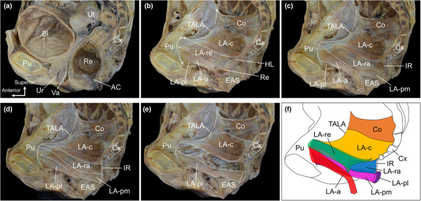

GinecologiaTrês compartimentosVíscera → suporteCada um sua cirurgiaDesce tudo junto
?
O assoalho tem três compartimentos, e cada víscera desce pelo seu. Qual parede cedeu?
Prolapso apical: útero que desce ou cúpula que desce
O compartimento apical é o topo — e ele desce de dois jeitos, conforme a paciente tenha ou não útero. Se há útero e é o colo que desce, puxando o corpo uterino, o quadro é o prolapso uterino. Se a paciente não tem mais útero (já operou) e é o fundo da vagina que despenca, o quadro é o prolapso de cúpula. Mesmo andar, duas versões — e essa distinção volta em coordenadas mais adiante, quando o ponto D disser se ainda há colo.
Prolapso anterior = cistocele (a bexiga que desce)
O compartimento anterior é a frente, e a víscera dele é a bexiga. Quando a parede vaginal anterior cede, a bexiga desce com ela: é a cistocele, o clássico do compartimento da frente — exatamente o que os números positivos da Lurdinha anunciaram.
Prolapso posterior = retocele (o reto que projeta)
O compartimento posterior é o fundo, e a víscera é o reto. Quando a parede vaginal posterior cede, o reto projeta sobre o canal vaginal e, nos casos maiores, chega a sair por ele: é a retocele. Frente é bexiga, fundo é reto — a topografia já quase entrega o diagnóstico.
Por que separar por compartimento: cada um tem sua cirurgia
A separação não é caprichismo de nomenclatura: a estrutura que cedeu muda a forma de corrigir. Cada compartimento é sustentado por um suporte próprio, e é a falha desse suporte específico que gera aquele prolapso — por isso cada compartimento tem sua cirurgia própria. Pensar por compartimento é pensar direto na conduta: identificado o andar que desabou, a técnica de reforço vem quase por consequência.
O esqueleto do suporte: as fáscias e os ligamentos de cada andar
O mapa anatômico tem colunas que se preenchem à medida que cada cirurgia nomeia seu suporte. Na frente, a fáscia pubovesicocervical sustenta a bexiga, prendendo-a ao púbis. Atrás, a fáscia retovaginal separa e sustenta reto e vagina. No ápice, os ligamentos cardinais e útero-sacros prendem o útero lá em cima; e, quando não há mais útero, a cúpula se ancora no promontório sacral ou no ligamento sacroespinhoso. Fechando o assoalho por baixo, o corpo perineal. Cada nome é o endereço de uma cirurgia: falhou o suporte, a correção o refaz.
A chave do apical: o útero preso nos ligamentos desce tudo junto
Um detalhe que vale por um diferencial inteiro: no prolapso uterino verdadeiro, desce tudo junto. Como o útero está preso nos ligamentos que também sustentam o fundo da vagina, quando ele desce, o fundo da vagina desce junto. Essa solidariedade — útero e fundo caindo juntos — é o que separa o prolapso uterino verdadeiro do simples colo comprido, e é a semente do diferencial que vem a seguir.
O Mapa do Assoalho Pélvico — versão anatômicaObra em dois painéis: o corte sagital com os três compartimentos e seus suportes fasciais e ligamentares, e o zoom da relação entre o suporte que falha e o prolapso que resulta em cada andar. Toque cada compartimento para ver “falha do suporte → qual prolapso”.Herói · hidrata o mapa do assoalho
Mapa do Assoalho Pélvico — versão anatômica
hidratando…
Anterior
Víscera
bexiga
Suporte
fáscia pubovesicocervical
Falha → prolapso
cistocele
Ponto POP-Q
Aa / Ba
Apical
Víscera
útero / cúpula
Suporte
cardinais e útero-sacros · cúpula: promontório / sacroespinhoso
Falha → prolapso
prolapso uterino / de cúpula
Ponto POP-Q
C / D
Posterior
Víscera
reto
Suporte
fáscia retovaginal
Falha → prolapso
retocele
Ponto POP-Q
Ap / Bp
As três vísceras que descemTrio orientador: a bexiga descendo como cistocele à frente, o útero/cúpula no ápice, o reto projetando como retocele atrás — cada um com sua seta de descida.Esquema · reforço rápido do mapa

O assoalho pélvico em corte: a topografia real dos compartimentos
Peça anatômica de referência (painel de corte sagital) mostrando a organização dos compartimentos e do diafragma pélvico — a base sobre a qual o mapa dos três andares se apoia.
Adaptado (corte de compartimentos) de Wu Y et al. “The levator ani muscle: a review of its functional parts in women.” Journal of Anatomy. 2024;244:486-496. Licenciado sob CC BY 4.0. Fonte: PMC.
real de referência anatômica — não achado clínico
Quiz — fixação
Uma paciente sem útero (histerectomia prévia) apresenta o fundo da vagina descido. O compartimento e o diagnóstico são:
B — a virada. Ápice + ausência de útero + fundo da vagina descendo = prolapso de cúpula (a versão apical de quem não tem mais útero).
A.cistocele é a bexiga pela parede anterior — compartimento errado.
C.retocele é o reto pela parede posterior — outro andar.
D.prolapso uterino exige útero para descer; sem útero não há como.
Por que cair.associar “ápice descendo” a “útero” no automático ignora o dado que muda tudo — a histerectomia prévia.
Por que o prolapso uterino verdadeiro faz o fundo da vagina descer junto com o colo?
B — a virada. A solidariedade útero–fundo vem da ancoragem ligamentar comum (cardinais e útero-sacros): descendo o útero, desce o que ele ancora.
A.a bexiga é do compartimento anterior e não empurra o ápice para baixo — inverte a topografia.
C.a retovaginal é o suporte posterior, não tem papel nesse mecanismo apical.
D.descreve o alongamento (só o colo desce, fundo fica em cima) — o oposto exato do prolapso verdadeiro.
Por que cair.é a pegadinha-diferencial que vem a seguir — confundir “colo aparece embaixo” com “útero desceu”.
A seguir
O ápice guarda a armadilha mais cobrada: às vezes o colo aparece lá embaixo sem que o útero tenha descido — e distinguir os dois vale uma cirurgia inteira.